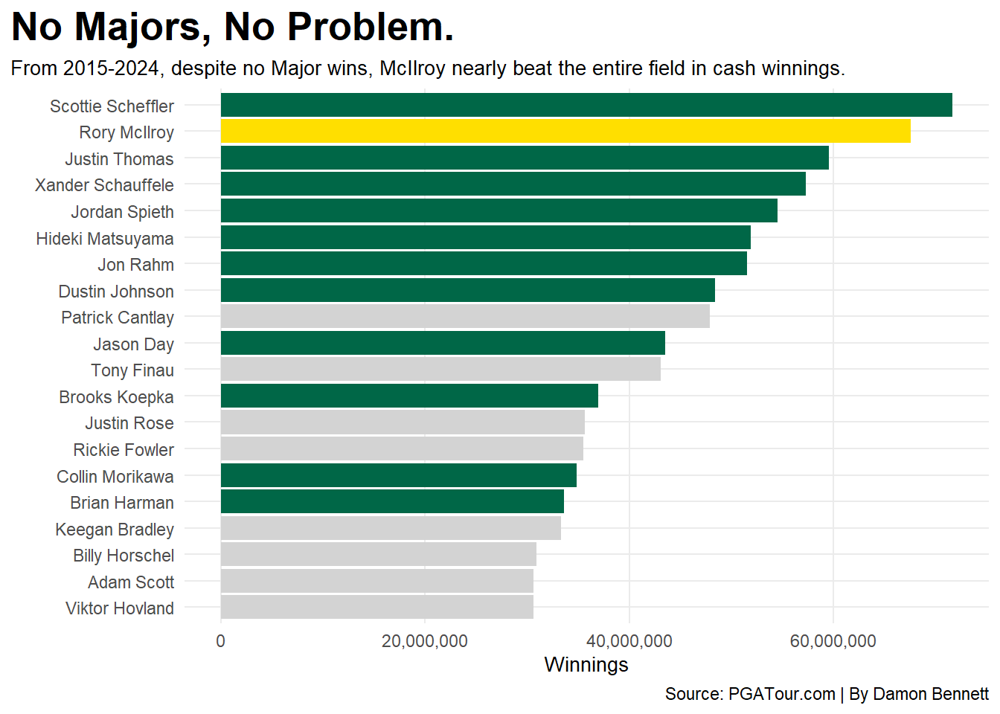

Code
library(tidyverse)
library(waffle)
library(ggrepel)
library(scales)
money25 <- read_csv("Money 2025.csv")
money24 <- read_csv("Money 2024.csv")
money23 <- read_csv("Money 2023.csv")
money22 <- read_csv("Money 2022.csv")
money21 <- read_csv("Money 2021.csv")
money20 <- read_csv("Money 2020.csv")
money19 <- read_csv("Money 2019.csv")
money18 <- read_csv("Money 2018.csv")
money17 <- read_csv("Money 2017.csv")
money16 <- read_csv("Money 2016.csv")
money15 <- read_csv("Money 2015.csv")
money14 <- read_csv("Money 2014.csv")
pgamoney25 <- money25 |> select(RANK, PLAYER, MONEY, "YTD VICTORIES") |> mutate(Year=2025)
pgamoney24 <- money24 |> select(RANK, PLAYER, MONEY, "YTD VICTORIES") |> mutate(Year=2024)
pgamoney23 <- money23 |> select(RANK, PLAYER, MONEY, "YTD VICTORIES") |> mutate(Year=2023)
pgamoney22 <- money22 |> select(RANK, PLAYER, MONEY, "YTD VICTORIES") |> mutate(Year=2022)
pgamoney21 <- money21 |> select(RANK, PLAYER, MONEY, "YTD VICTORIES") |> mutate(Year=2021)
pgamoney20 <- money20 |> select(RANK, PLAYER, MONEY, "YTD VICTORIES") |> mutate(Year=2020)
pgamoney19 <- money19 |> select(RANK, PLAYER, MONEY, "YTD VICTORIES") |> mutate(Year=2019)
pgamoney18 <- money18 |> select(RANK, PLAYER, MONEY, "YTD VICTORIES") |> mutate(Year=2018)
pgamoney17 <- money17 |> select(RANK, PLAYER, MONEY, "YTD VICTORIES") |> mutate(Year=2017)
pgamoney16 <- money16 |> select(RANK, PLAYER, MONEY, "YTD VICTORIES") |> mutate(Year=2016)
pgamoney15 <- money15 |> select(RANK, PLAYER, MONEY, "YTD VICTORIES") |> mutate(Year=2015)
pgamoney14 <- money14 |> select(RANK, PLAYER, MONEY, "YTD VICTORIES") |> mutate(Year=2014)
sg25 <- read_csv("SG 2025.csv")
sg24 <- read_csv("SG 2024.csv")
sg23 <- read_csv("SG 2023.csv")
sg22 <- read_csv("SG 2022.csv")
sg21 <- read_csv("SG 2021.csv")
sg20 <- read_csv("SG 2020.csv")
sg19 <- read_csv("SG 2019.csv")
sg18 <- read_csv("SG 2018.csv")
sg17 <- read_csv("SG 2017.csv")
sg16 <- read_csv("SG 2016.csv")
sg15 <- read_csv("SG 2015.csv")
sg14 <- read_csv("SG 2014.csv")
sgofftee25 <- sg25 |> select(RANK, PLAYER, AVG, "TOTAL SG:OTT", "MEASURED ROUNDS") |>mutate(Year=2025)
sgofftee24 <- sg24 |> select(RANK, PLAYER, AVG, "TOTAL SG:OTT", "MEASURED ROUNDS") |>mutate(Year=2024)
sgofftee23 <- sg23 |> select(RANK, PLAYER, AVG, "TOTAL SG:OTT", "MEASURED ROUNDS") |>mutate(Year=2023)
sgofftee22 <- sg22 |> select(RANK, PLAYER, AVG, "TOTAL SG:OTT", "MEASURED ROUNDS") |>mutate(Year=2022)
sgofftee21 <- sg21 |> select(RANK, PLAYER, AVG, "TOTAL SG:OTT", "MEASURED ROUNDS") |>mutate(Year=2021)
sgofftee20 <- sg20 |> select(RANK, PLAYER, AVG, "TOTAL SG:OTT", "MEASURED ROUNDS") |>mutate(Year=2020)
sgofftee19 <- sg19 |> select(RANK, PLAYER, AVG, "TOTAL SG:OTT", "MEASURED ROUNDS") |>mutate(Year=2019)
sgofftee18 <- sg18 |> select(RANK, PLAYER, AVG, "TOTAL SG:OTT", "MEASURED ROUNDS") |>mutate(Year=2018)
sgofftee17 <- sg17 |> select(RANK, PLAYER, AVG, "TOTAL SG:OTT", "MEASURED ROUNDS") |>mutate(Year=2017)
sgofftee16 <- sg16 |> select(RANK, PLAYER, AVG, "TOTAL SG:OTT", "MEASURED ROUNDS") |>mutate(Year=2016)
sgofftee15 <- sg15 |> select(RANK, PLAYER, AVG, "TOTAL SG:OTT", "MEASURED ROUNDS") |>mutate(Year=2015)
sgofftee14 <- sg14 |> select(RANK, PLAYER, AVG, "TOTAL SG:OTT", "MEASURED ROUNDS") |>mutate(Year=2014)
finishes25 <- read_csv("Top10 2025.csv")
finishes24 <- read_csv("Top10 2024.csv")
finishes23 <- read_csv("Top10 2023.csv")
finishes22 <- read_csv("Top10 2022.csv")
finishes21 <- read_csv("Top10 2021.csv")
finishes20 <- read_csv("Top10 2020.csv")
finishes19 <- read_csv("Top10 2019.csv")
finishes18 <- read_csv("Top10 2018.csv")
finishes17 <- read_csv("Top10 2017.csv")
finishes16 <- read_csv("Top10 2016.csv")
finishes15 <- read_csv("Top10 2015.csv")
finishes14 <- read_csv("Top10 2014.csv")
top10finishes25 <- finishes25 |> select(RANK, PLAYER, "TOP 10", "1ST", "2ND") |> mutate(Year=2025)
top10finishes24 <- finishes24 |> select(RANK, PLAYER, "TOP 10", "1ST", "2ND") |> mutate(Year=2024)
top10finishes23 <- finishes23 |> select(RANK, PLAYER, "TOP 10", "1ST", "2ND") |> mutate(Year=2023)
top10finishes22 <- finishes22 |> select(RANK, PLAYER, "TOP 10", "1ST", "2ND") |> mutate(Year=2022)
top10finishes21 <- finishes21 |> select(RANK, PLAYER, "TOP 10", "1ST", "2ND") |> mutate(Year=2021)
top10finishes20 <- finishes20 |> select(RANK, PLAYER, "TOP 10", "1ST", "2ND") |> mutate(Year=2020)
top10finishes19 <- finishes19 |> select(RANK, PLAYER, "TOP 10", "1ST", "2ND") |> mutate(Year=2019)
top10finishes18 <- finishes18 |> select(RANK, PLAYER, "TOP 10", "1ST", "2ND") |> mutate(Year=2018)
top10finishes17 <- finishes17 |> select(RANK, PLAYER, "TOP 10", "1ST", "2ND") |> mutate(Year=2017)
top10finishes16 <- finishes16 |> select(RANK, PLAYER, "TOP 10", "1ST", "2ND") |> mutate(Year=2016)
top10finishes15 <- finishes15 |> select(RANK, PLAYER, "TOP 10", "1ST", "2ND") |> mutate(Year=2015)
top10finishes14 <- finishes14 |> select(RANK, PLAYER, "TOP 10", "1ST", "2ND") |> mutate(Year=2014)
moneyall <- bind_rows(pgamoney24, pgamoney23, pgamoney22, pgamoney21, pgamoney20, pgamoney19, pgamoney18, pgamoney17, pgamoney16, pgamoney15) |> mutate(MONEY = gsub("\\$", "", MONEY),MONEY = as.double(MONEY))
sgteeall <- bind_rows(sgofftee24, sgofftee23, sgofftee22, sgofftee21, sgofftee20, sgofftee19, sgofftee18, sgofftee17, sgofftee16, sgofftee15)
finishesall <- bind_rows(top10finishes15, top10finishes16, top10finishes17, top10finishes18, top10finishes19, top10finishes20, top10finishes21, top10finishes22, top10finishes23, top10finishes24)
top20money <- moneyall |>
group_by(PLAYER) |>
summarise(MONEY=sum(MONEY)) |>
arrange(desc(MONEY)) |>
slice_head(n=20)
rory <- top20money |>
filter(
PLAYER == "Rory McIlroy"
)
major <- top20money |>
filter(
PLAYER == "Scottie Scheffler"|
PLAYER == "Justin Thomas"|
PLAYER == "Jordan Spieth"|
PLAYER == "Xander Schauffele"|
PLAYER == "Jason Day"|
PLAYER == "Dustin Johnson"|
PLAYER == "Brooks Koepka"|
PLAYER == "Jon Rahm"|
PLAYER == "Collin Morikawa"|
PLAYER == "Hideki Matsuyama"|
PLAYER == "Brian Harman"
)
ggplot() +
geom_bar(data=top20money, aes(x=reorder(PLAYER, MONEY), weight=MONEY), fill="lightgrey")+
geom_bar(data=rory, aes(x=reorder(PLAYER, MONEY), weight=MONEY), fill ="#ffdf00")+
geom_bar(data=major, aes(x=reorder(PLAYER, MONEY), weight=MONEY), fill ="#006747")+
scale_y_continuous(labels=comma)+
coord_flip()+
labs(x=" ",
y="Winnings",
title= "No Majors, No Problem.",
subtitle= "From 2015-2024, despite no Major wins, McIlroy nearly beat the entire field in cash winnings.",
caption="Source: PGATour.com | By Damon Bennett")+
theme_minimal()+
theme(
plot.title = element_text(size = 20, face = "bold"),
axis.title = element_text(size = 10),
plot.subtitle = element_text(size=10),
panel.grid.minor = element_blank(),
plot.title.position = "plot"
)